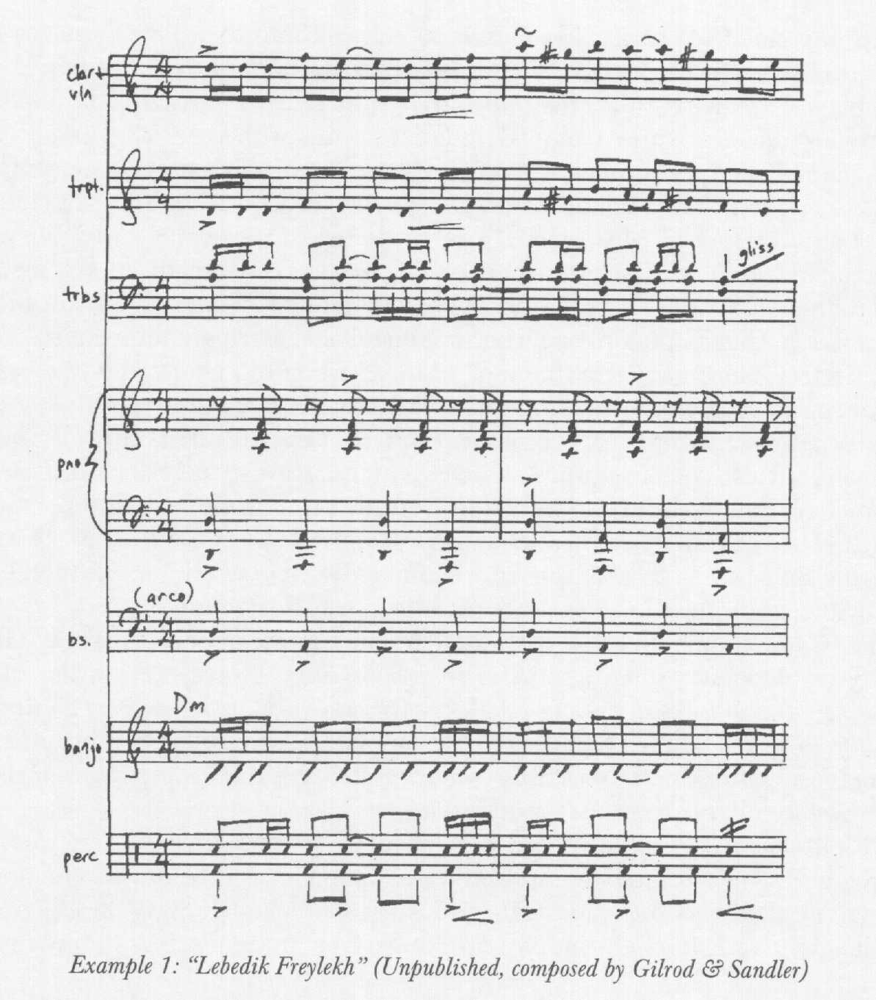
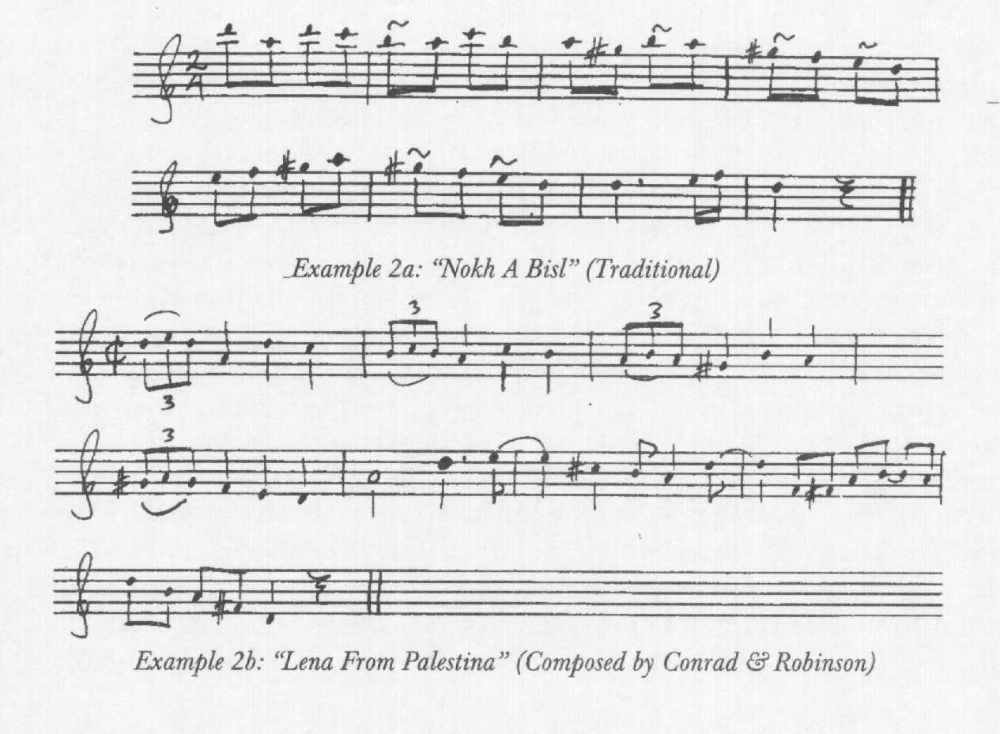
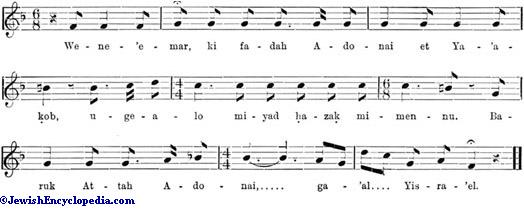
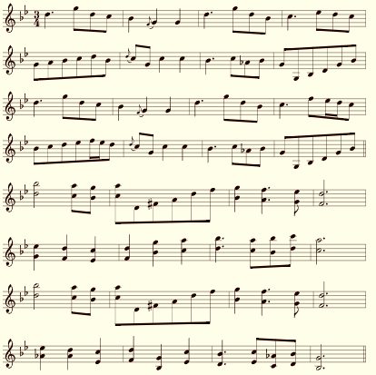
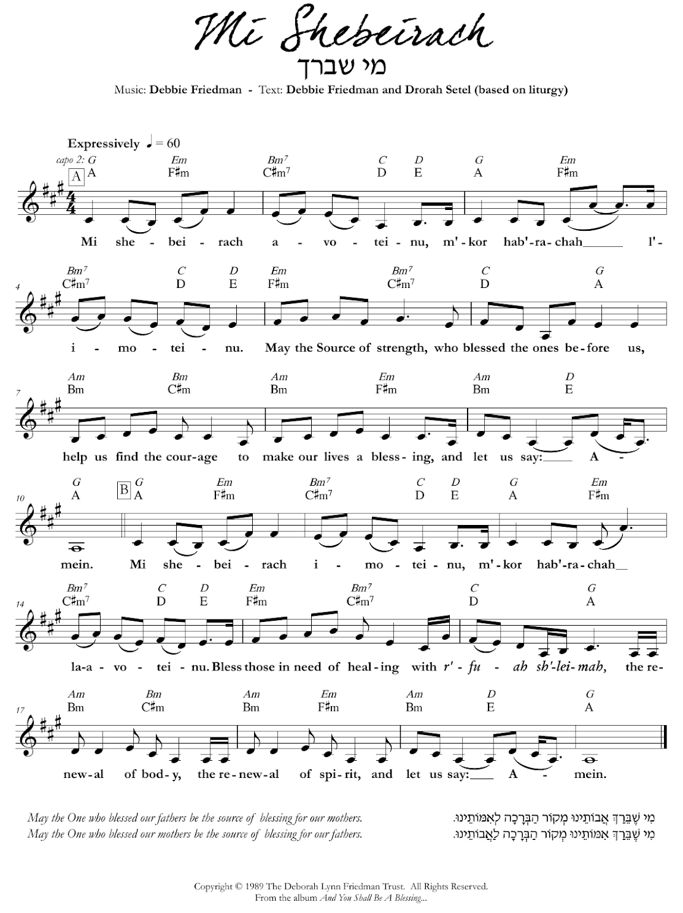
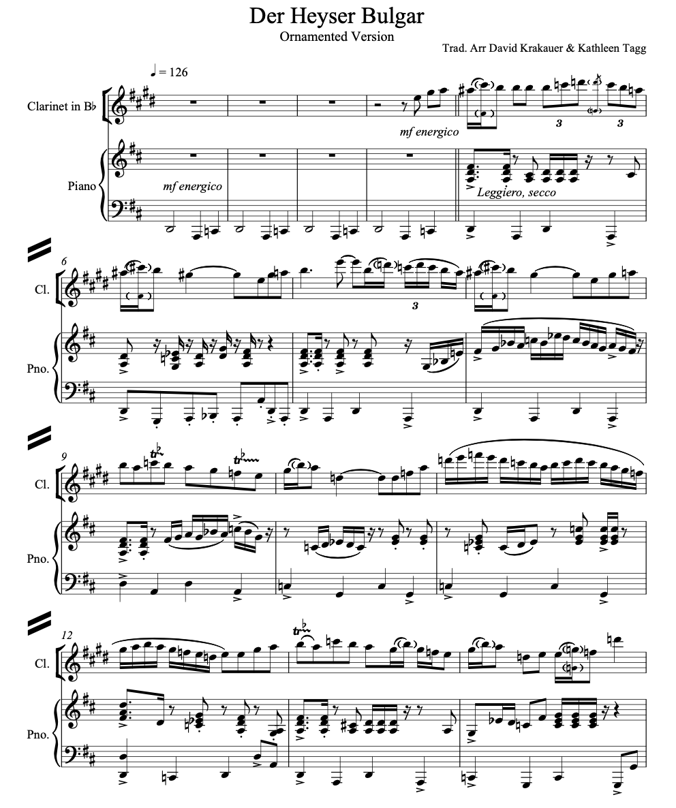

Research question: to what extent does the parallel evolution of klezmer music and Reform Jewish liturgical music in the U.S. exemplify the tendency of Jewish subcultures toward assimilation?
“I am in my holiest place when I pray using the power of music. My experience is highly enhanced when I am surrounded by community, as our voices fill the air with exquisite harmonies.” —Rob Aronson[1]
The Jewish experience is inextricably defined by music. From Biblical times, with the Song of the Sea in Exodus 15, to the present day, with Aronson’s “Havah Nashirah” (“Let Us Sing”), Jews sing to connect with each other and with God. But these two songs are very different in many ways: the fact that Aronson used more English than Hebrew in the lyrics, that he included chords for guitar or piano with the vocals, and even that he was able to write down the music and share it with people he had never met—such as myself—are all much more recent than the story of Moses. While they would have been possible for no one three thousand years ago, they would still not be possible for Jews if we had not borrowed these things from surrounding cultures—especially in the United States—over the last couple of centuries.
Jews began to immigrate to the U.S. from Central Europe in the 1830s, bringing with them Reform Judaism, which had grown out of the Enlightenment.[2] As the Reform movement spread throughout the U.S., it diverged from the religious practices of Orthodoxy but maintained a similar style of religious music, which remained common in its synagogues for more than a century. During the Gilded Age—roughly 1880 to 1924—many more Jewish immigrants arrived from all over Europe, with those from Eastern Europe especially carrying the music of their communities outside of the synagogue. This is the music that would become popular alongside the rise of jazz and become known as “klezmer music” later in the twentieth century.[3]:6
Both of these forms of music—that of the Reform synagogue and that of the klezmer—still exist, but their modern forms would be nearly unrecognizable to the European immigrants who first brought them to this continent. This paper explores how this happened, answering the question, to what extent does the parallel evolution of klezmer music and Reform Jewish liturgical music in the U.S. exemplify the tendency of Jewish subcultures toward assimilation?
The Yiddish word klezmer comes from the Hebrew phrase k’lei-zemer, which literally means “vessels of song.” It was commonly used in Eastern Europe to denote a musician, usually one who would perform traditional dance music at weddings and other festive events.[4] Klezmorim (plural of klezmer) were often employed in the late 1700s and 1800s by Hasidic congregations as the movement grew throughout the region, especially to enhance their dances and nigunim (word-less melodies).[3]:6 This had a lasting influence on the style of music the klezmorim developed, now also known as klezmer: “melodies of clearly Hasidic origin formed a significant part of the Eastern European klezmer repertory … and until recently klezmer musicians … have had little reason to differentiate Hasidic material from other parts of the repertory.”[5]:207–208 This was augmented by traditional styles of other Jewish spheres: “typical klezmer ornaments are also found in other forms of Jewish musical expression including cantorial music and folksong. The cantorial parallel is evident in the shape and phrasing of instrumental improvisations.”[3]:6
Between 1881 and 1924, more than 2.5 million Jews immigrated from Eastern Europe to the U.S.,[6] bringing with them their religious practices—overwhelmingly Hasidic, with a minority following other branches of Orthodoxy—and their music. The klezmorim among them “re-created the sounds of eastern Europe’s cities and towns on this side of the ocean,” using musical elements from cultures across that region and common klezmer instruments such as the tsimbl, accordion, and valve trombone.[3]:6 By the end of this period, though, there were distinct breaks from the tradition in favor of more “modern,” local music.
Figure 1 shows the intersection of Eastern European klezmer and ’20s jazz. Recorded in 1927 by Abe Schwartz’s orchestra, “Lebedik un Freylekh” appends to a distinctly American instrumentation—brass, piano, banjo, and drum set—the clarinet, violin, and valve trombone of klezmer.[3]:6
figure 1: “Lebedik un Freylekh” as recorded by Abe Schwartz [3]:7
While the chords under these two bars are Dm, as noted on the banjo part, the presence of B♮ and G♯ in the melody puts the song in D double-harmonic minor, also known as the Gypsy minor scale,[7] giving it a feel that might be described as “Oriental” and is reminiscent of the Eastern European origins of klezmer music. At the same time, it has an American-jazz sound because of the included instruments that would never have been used in that Eastern European music. It was created for Jews who had come to the U.S., familiar with the klezmer tunes but wanting to hear something that reflected their experience as immigrants—as Americans.
Figure 2 shows the same effect from a different perspective. “Nokh a Bisl” (“A Little Bit More”) is a traditional klezmer song. Con Conrad and J. Russel Robinson took the melody and transformed it into the jazz that they were used to with “Lena from Palesteena” (1920). [3]:8
figure 2: “Nokh a Bisl” and “Lena from Palesteena” [3]:8
Both of these are also in D double-harmonic minor. In “Palesteena,” the turns became triplets to conform to the popular swing style; the second half changed from a natural extension of the opening to a busy, syncopated counter-melody, with F♯s and C♯s to give it a major feel. The goal here may not have been to appeal to a Jewish audience but to reach mainstream audiences with a novel sound, cleaning up this “foreign” music to make it more acceptable.
At the same time, the music that had spawned klezmer hundreds of years earlier lived on in a much more traditional form, in the synagogue. Though music had been present in the liturgy since the First Temple period, around the sixth and seventh centuries BC, in the Diaspora (Jews outside of Israel) this music evolved over time based on the music they heard around them. The Jewish Encyclopedia provides, “The music may have preserved a few phrases in the reading of Scripture which recalled the song of the Temple … but generally it echoed from the first the tones which the Jew of each age and country heard around him, not merely in the actual borrowing of tunes … but more especially in the prevailing tonality or description of scale on which the music was based.”[8]:120 It provides the example, shown in figure 3, of an excerpt from the weekday evening liturgy, the end of the “Redemption” prayer. This segment contains no sevenths, so its scale is not fully defined, but it begins in the Lydian scale—with the raised fourth, B♮—but switches to a normal fourth, returning to the major scale for the end of the blessing.
figure 3: excerpt from the weekday evening service [8]:124
At this point, the music of the U.S. synagogue was very much an insular style as compared to the music around it; while this Lydian/major motif may have arisen from several possible sources in the past, the contemporary music would not have used that at all, but that had not yet affected the Jewish canon.
Prior to his death in 1938, Abraham Zevi Idelsohn compiled a Jewish Song Book for Synagogue, School and Home , which includes the music for nearly every song popular in the Ashkenazic tradition at the time and the liturgy of every service of the year. Figure 4 shows an excerpt from the book, the two versions of the Priestly Benediction in the section for the Three Festivals. The “Solo” sections would be sung by the cantor, while the “Unison or Choir” sections are affirmations of the blessings that the cantor is giving.
figure 4: Priestly Benedictions from Idelsohn’s Jewish Song Book [9]:156–159
In the first of these songs, the key signature with one flat would seem to imply a key in D minor. The tonal center throughout the solo sections, however, is G, and the presence of E♭, F♯, and the occasional C♯ in the chords underneath implies a G harmonic minor or double-harmonic minor scale; meanwhile, the unison sections favor D major chords, though there are also elements of D minor. The second tune lies more consistently in A♭ major, as the key signature would imply, with some E♮s—implying F harmonic minor—and venturing into C harmonic minor, with D♮ and B♮, for the second unison section. The use of harmonic minor scales and the variations between minor and major echo the traditional music of the Jews of Eastern Europe, which picked up elements of the music of the region and its “Oriental” sound before it arrived in the U.S.
Following its popularity in the 1930s, klezmer music saw a decline in public appreciation in the U.S. due to the destruction of Jewish communities in Europe during the Holocaust and the creation of the state of Israel in 1948.
In 1977, Nat Hentoff commented that “For years now, I had thought the klezmorim to be nearly extinct. Oh, some old players must still be boldly wailing in some dwindling Orthodox Jewish neighborhoods, but surely they are the last of their line.” When he heard them, he “would close his eyes and grin at the ghosts of my clan in Minsk and Pinsk.” Now, he continued, a new generation has “taken up and merrily revivified this heritage.”[10]:49
The “new generation” created a movement that became known as the “klezmer revival.” “Its origins in the late ’70s can be found in the confluence of the larger American ‘roots’ and folk music movements, ‘folk music’ being the musical department of the alternative youth scene at that time. The musicians who initiated the klezmer revival to a large extent started out playing bluegrass, old-timey, and other American traditional music genres, and these musicians jumped at the chance to have their very own folk music.”[11]:45 Among these were “young Jewish musicians … asking questions about their musical ancestry,” who had been “imbued with the aesthetic of 1960s self-expression” and played “the raw musical styles of blues, bluegrass, old-time swing, jazz, folk, and soul.” [3]:10 As they developed their own “new klezmer” music, they drew inspiration from these other styles that they had already learned, and with this music they created a folk style that had never been seen before in the klezmer genre.
One of these musicians was mandolinist and clarinetist Andy Statman, who drew on his experience in bluegrass to create klezmer with guitar as the rhythmic underpinning, a new element in klezmer. Figure 5 shows an excerpt from one of his songs from this era, “Flatbush Waltz” (1980).
figure 5: Andy Statman’s “Flatbush Waltz”[12]
While the instrumentation is novel, the musical elements of this melody are nothing new—the ornamentation of rhythms is a common element from earlier klezmer, and from the tonal center of G the melody occupies a variety of minor scales, including the stereotypically Semitic harmonic minor, with the accidentals on F♯ and A♭ in addition to F♮ and A♮.[7] The “revival” movement of which he was part sought to reinstate the popularity of this music by bringing it back into public view and making it look like the common music of the time, without changing its fundamental aspects. At the same time, the melding of styles in this period was a relatively novel concept in music as a whole, facilitated by an ability to share music around the world in a way that would not have been possible a few decades earlier, but fit neatly into the klezmer that had arisen in the U.S.
Associated with the movements in music that led to the klezmer revival in the late 1970s were corresponding movements in American-Jewish cultural identity. Alicia Svigals defines these in three groups—“the one that discards the culture and keeps the religion, the one that discards the religion and keeps the culture, and the one that uncritically embraces both,” which she calls Jewish Renewal, Yiddishism, and Ba’al T’shuvah (literally “master of return”), respectively. She writes, “The first two are made up of Jews who identify with the progressive left. These are people who are looking for a way of being Jewish that is consonant with their feminist, gay-positive, and other new-left values, and that does away with the social strictures of the past: that is, a way of being Jewish while still being themselves.” These ideologies arose from the Reform and Reconstructionist denominations but reflected a political shift that had not yet been seen in the synagogue.[11]:44
The Jewish Renewal movement especially draws on the “new-left” philosophy, with the prominent singer-songwriter Debbie Friedman rethinking religious texts in light of a new mindset. She took the Mourner’s Kaddish—as the name implies, a prayer for the dead—and chose “to interpret this prayer as it is written—as an affirmation of life and the glorification of God’s name.” [13]:271 In “Mi Shebeirach” (1989), shown in figure 6, she modified the liturgy “to reflect a feminist sensibility,” including both ‘avoteinu’ (our fathers) and ‘imoteinu’ (our mothers) as a way of demonstrating that neither God nor the people fit into a single gender category.[11]:45
figure 6: Debbie Friedman’s “Mi Shebeirach”[14]
Gone are the accidentals and ornaments that would give the melody a distinct sound, as is any assumption of roles in the synagogue that would be important for this song. Instead, Friedman writes a simple melody in A major, with chord notation for a guitar or piano accompaniment, like the rock or folk of the time; more importance is placed on the lyrics, mixing Hebrew and English to make the message more accessible, so the song becomes a vehicle for emotion and personal connection. In general, Svigals writes, her lyrics were set to “to beautiful, spiritual melodies which for the most part draw on an American popular music vocabulary.” [11]:45 Her longtime friend Jeff Klepper describes some of her songs as “in a blues-jazz style associated more with singers like Billie Holiday”[13]:272 or “dated, like outtakes from the musical Hair.” [13]:270 Increasingly, at the hands of musicians like Friedman (and Klepper), the music of the Reform synagogue became less like the style Idelsohn chronicles, with a virtuosic cantor and a full choir, and more like the folk acts that were very popular beyond the synagogue.
Debbie Friedman’s music is still incredibly popular throughout the U.S. Reform movement, with some of her songs (including “Mi Shebeirach”) becoming so well-known that many think of them as traditional. At my synagogue, we continue the same trend of bringing the traditional music into a modern context with the music of Friedman, Klepper, Dan Nichols, Craig Taubman, and more. We have monthly services where original arrangements of this music are performed by the teen band, which has the appearance of a high-school chamber ensemble, introducing elements of contemporary Western-classical music; annually, on the Friday before MLK Day, our Reform Jewish music is mixed with the Gospel music of a Black church choir, reinforcing the values of redemption and justice that we so often sing and pray about on our own. All of this is symbolic of the integration of the Jewish community into mainstream culture but simultaneously represents a powerful resistance to complete assimilation as we continue to celebrate our unique ideas and beliefs.
“I don’t know what you call that, but that’s not klezmer.” If I had a dollar for every time I exited a concert by Brave Old World or Golem and overheard someone saying this, I’d be, as the saying goes, a rich man. I hate to disappoint you, but yes, it is klezmer. And not only is it klezmer, it is part and parcel of the klezmer tradition; indeed, it is traditional klezmer, because klezmer has always spoken in the idiom of its time.[15]
Seth Rogovoy’s point in writing this is that the genre has continued to evolve; the revival of the 1970s never really ended, in the sense that klezmer continues to blend into the music scene around it. It draws more inspiration from the present than from its own past, so it does not sound like the music that was played fifty years ago. Instead, the title of his article provides, “rock, jazz, punk, hip-hop, and techno bring new sounds to the Jewish mix.”[15] Rogovoy goes on to assert “that there is no such thing as ‘klezmer music’ at all” because it is defined so much by the musical culture that surrounds it. “[T]he need to define klezmer … is … totally unnecessary. Much better to follow tradition and embrace a wider approach, as the [Eastern European Jewish] musicians often did, incorporating ‘co-territorial’ and ‘cosmopolitan’ influences into their music.”[15]
David Krakauer is one of the leading musicians in this movement, joining his old-time klezmer clarinet sound with modern styles of rock, jazz, and hip-hop. This influence is demonstrated in “Der Heyser Bulgar” (c. 2009), the beginning of which is shown in figure 7.
figure 7: David Krakauer’s “Der Heyser Bulgar”[16]
Krakauer makes extensive use of minor accidentals; while the song is written in concert D major, the use of the ♭2, ♭6, and ♭7 puts the tune in the Phrygian dominant (or harmonic dominant) scale.[7] Meanwhile, the melody frequently includes A♯, in addition to A♮, hinting to the double-harmonic minor scale and thus the Eastern European origins of klezmer. While the ghost notes and trills are commonplace as ornamentation in klezmer, some of these same elements, along with the triplet rhythms, draw parallels with contemporary jazz.
With artists such as Krakauer on his clarinet, Frank London and Kaia “Chaia” Berman-Peters playing electronic klezmer, and the Shvesters (Yiddish for ‘sisters’) singing jazz-age classics in Yiddish, modern klezmer is defined by its lack of definition, with every musician and musicologist having different ideas of what it is and what it should be. [15] [17] It is jazz, it is blues, it is punk, it is techno, it is electronica, and it is folk; “Andy Statman can pull out his mandolin and convince you that bluegrass was handed down to the Israelites at Mount Sinai … pianist Anthony Coleman can play ‘Mayn Shtetele Belz’ and convince you that the Buena Vista Social Club from Havana is the house band of one of the Ten Lost Tribes.”[15] The unique style of each of these musicians is supported by the community surrounding its primary genr—whether or not that is klezmer—and bolstered by the audience that specifically seeks music they can connect with as Jews or enjoyers of Jewish music.
This question underlies this entire exploration, and Jews and non-Jews alike have sought to answer it for more than a hundred years. Curt Sachs defined it as “music made by Jews, for Jews, as Jews;” Alexander Knapp counters this by asking, “Does this statement imply that anything composed not by Jews, not for Jews, not as Jews, would, ipso facto, be not Jewish music?” and proceeds to give several examples of songs that, to an ordinary reader, obviously do fall into the category of “Jewish music” but do not meet all three of Sachs’s criteria. [18]:565 Cyrus Adler and Francis Cohen in the Jewish Encyclopedia and Abraham Idelsohn in the Jewish Song Book each attempted to classify the music of their time by compiling the melodies and motifs, and both created products that are hard to read or use due to the sheer amount of information they have tried to condense to a reasonable size. [8] [9]
Multiple scholars, Knapp not least among them, argue that the question is futile. In a meta-article on the topic, Mark Slobin writes, “The mirage of Jewish music evaporates as you gaze at it, replaced by the vision of a group of Jews singing whatever they like, from any local source.” [19]:222 In other articles, Charles Hersch and Lloica Czackis have examined the genres of “Jewish jazz”[20] and “Yiddish tango,”[21] and Jonathan Magonet has discussed the influence of Jewish-written songs on popular culture.[22] There is also something to be said about the idea of notation: traditional music would never have been written down, yet today all the music we play is transcribed—in a system that originated in Western Europe, which is not the origin of the majority of the culture—and even as far back as the early 1900s, there was a perceived need to write it down, as evidenced by the images near the beginning of this paper. Jewish music on the whole does not exist in and of itself but is defined by its surroundings, as “the music of an extraordinarily mobile, widely dispersed, and frequently persecuted ‘people’ who cannot easily be defined by ‘homeland,’ ‘race,’ ‘ethnicity,’ ‘nationality’ or ‘religion.’” [19]:224
“[R]itual music is a deeply sensual experience that touches people in a way that words cannot. Music converts the ordinary into the miraculous, and individuals into a community of prayer. And music enables overly-intellectual Jews to rest their minds and open their hearts.” —Eric Yoffie[23]
This paper has traversed the last 120 years of Jewish and Jewish-adjacent music in the U.S., stopping to consider defining moments in the evolution of klezmer music and Reform liturgical music. Klezmer “came off the boat” from Europe and found itself surrounded by a rapidly growing jazz culture, which brought it into the public eye for a decade; resurged in the 1970s due to culture shifts in folk and soul music; and has retained a sort of cult following to the present as a representation of Jewish (or Jewish-inspired) jazz-folk. Meanwhile, the music of the Reform synagogue has grown apart from its united origins with that of the Orthodox synagogue as it detached itself from antiquated language, took on the styles and practices of secular genres, and began to prioritize ideological partnerships over religious particularism. All of this is entirely in line with what the Jewish community in the U.S. as a whole was doing over the same period, growing from a single culture that looked roughly like today’s Modern Orthodox into a set of subcultures as diverse as the rest of the country that surrounded them.
It is this diversification—and, in this case, secularization—that defines the pattern of assimilation. Though there were some nuanced differences between different parts of the Jewish community in the early 1900s, to someone who had spent their whole life within the contemporary mainstream society, it would have appeared to be a unit—“the Jews.” However, no culture is truly homogenous, so in order to fit in the Jews had to divide into their own subcultures that mirrored those of the dominant culture, all the while letting go of the things that made them most unique because they would have also made them targets for persecution. Therefore, today, we are left with a community that, while undoubtedly retaining some defining features and facing persecution and discrimination, has blended well enough into mainstream America that the average person cannot tell us apart. Judaism is, as ever, an interesting oddity—with a language and history that stand out—but otherwise invisible.
↑ 1. Rob Aronson, “Havah Nashirah” in Ruach 5779
↑ 2. “Reform Judaism: History & Overview” from the
Jewish Virtual Library,
jewishvirtuallibrary.org/
a b c d e f g h i 3. Hankus Netsky, “An Overview of Klezmer Music and its Development in the U.S.,” in Judaism volume 47 issue 1, proquest:200408799
↑ 4. Giora Feidman, “Giora Feidman,”
giorafeidman-online.com/
↑ 5. Abigail Wood, “Stepping across the Divide: Hasidic Music
in Today’s Yiddish Canon,” in Ethnomusicology volume 51 issue 2,
doi:10.2307/
↑ 6. “A Century of Immigration, 1880-1924,” in From
Haven to Home: 350 Years of Jewish Life in America, Library of Congress,
loc.gov/
a b c 7. “List of musical scales and modes,” on Wikipedia,
en.wikipedia.org/
a b c 8. Cyrus Adler and Francis L. Cohen, “Music, Synagogal,” in the
Jewish Encyclopedia (Isidore Singer, editor) volume 9, available at
jewishencyclopedia.com/
a b 9. Abraham Z. Idelsohn, The Jewish Song Book for Synagogue, School, and Home (Baruch Joseph Cohon and A. Irma Cohon, editors)
↑ 10. Barbara Kirshenblatt-Gimblett, “Sounds of Sensibility,” in Judaism volume 47 issue 1, proquest:200399383
a b c d 11. Alicia Svigals, “Why We Do this Anyway: Klezmer as Jewish Youth Subculture,” in Judaism volume 47 issue 1, proquest:200395127
↑ 12. Andy Statman, “Flatbush Waltz,” on
The Session, thesession.org/
a b c 13. Jeff Klepper, “Visions of Debbie Friedman,” in Musica Judaica volume 20, jstor:26454589
↑ 14. Debbie Friedman and Drorah Setel, “Mi
Shebeirach,” on Sheet Music Direct,
sheetmusicdirect.com/…/
a b c d e 15. Seth Rogovoy, “But is it Klezmer? Rock, Jazz, Punk, Hip-hop, and Techno
Bring New Sounds to the Jewish Mix,” in PaknTreger,
yiddishbookcenter.org/
↑ 16. David Krakauer and Kathleen Tagg, “Der Heyser
Bulgar,”
davidkrakauer.com/
↑ 17. Elizabeth Karpen, “‘What Doesn’t Grow Is
Dead’: How Klezmer Musicians Are Creating For A Modern Jewish World,”
grammy.com/
↑ 18. Alexander Knapp, “Conceptualizing ‘Jewish Art
Music’ While Standing on One Leg: A Scholar’s Dilemma,” in the
Journal of the American Musicologal Society volume 65 issue 2,
doi:10.1525/
a b 19. Mark Slobin, “Learning the Lessons of Studying Jewish Music,” in Judaism volume 44 issue 2, proquest:200406584
↑ 20. Charles Hersch, “Swinging Hava Nagila: ‘Jewish
Jazz’ and Jewish Identity,” in Shofar volume 33 issue 3,
doi:10.5703/
↑ 21. Lloica Czackis, “Yiddish Tango: A Musical Genre?”
in European Judaism volume 42 issue 2,
doi:10.3167/
↑ 22. Jonathan Magonet, “From Bible To Berlin (Irving): The
Message of Jewish Popular Song,” in European Judaism volume 35 issue 2,
doi:10.3167/
↑ 23. Eric Yoffie, “Realizing God’s Promise: Reform
Judaism in the 21st Century,”
ericyoffie.com/
Recordings of songs, by figure: